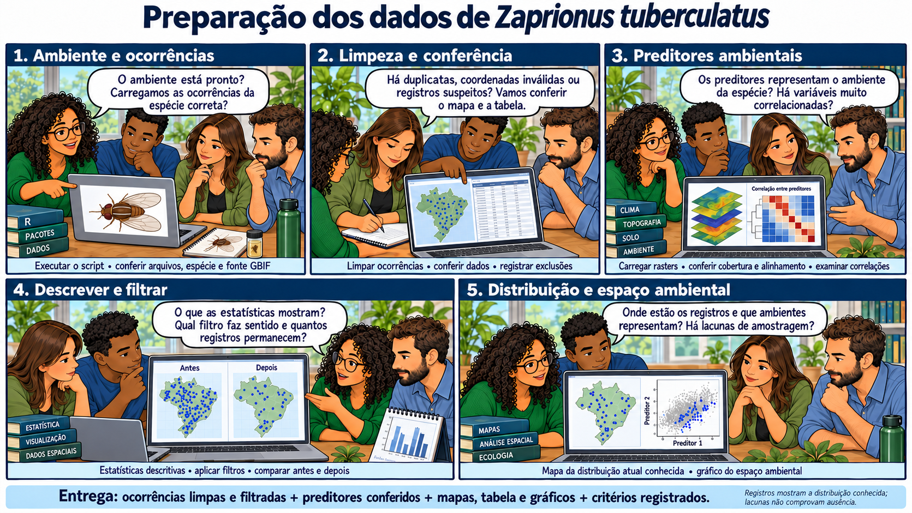

CAPÍTULO 06 · D · Data
Conferir os pontos antes de modelar
A equipe inspeciona a posição e a procedência dos registros, acompanha exclusões e reduz redundância.
Base no curso: slides 169–175; 195–206; 281.
Ao abrir o primeiro mapa, o grupo vê pontos sobrepostos e uma coordenada fora da região esperada. Um integrante procura a ficha de origem antes de propor a exclusão. O trabalho agora é conferir registros, não escolher o algoritmo.

Coordenadas vazias e fora dos limites
Uma presença sem localização utilizável não permite extrair o ambiente. Coordenadas fora dos intervalos válidos também precisam de tratamento. O pacote bdc produz indicadores; o roteiro os reúne e mantém as linhas que passam pelo critério.
flags <- bdc_coordinates_empty(
presence.points, lat = "decimalLatitude", lon = "decimalLongitude"
)
flags <- bdc_summary_col(data = flags)
presence.points <- presence.points[flags$.summary, ]flags <- bdc_coordinates_outOfRange(
presence.points, lat = "decimalLatitude", lon = "decimalLongitude"
)
flags <- bdc_summary_col(data = flags)
presence.points <- presence.points[flags$.summary, ]Passar por essas verificações não prova que o local está correto. Um ponto pode ter coordenadas válidas e ainda representar um centroide, uma troca de sinais ou uma informação copiada. A equipe volta à fonte quando o mapa e a descrição não concordam.
Detalhe numérico não demonstra acurácia
O número de casas decimais expressa o detalhe do registro. Acurácia e incerteza posicional precisam de evidência sobre a localização. Compare essa informação com a resolução dos preditores: um ponto incerto não fica mais bem localizado porque o raster tem células menores.
Uma presença por célula
Depois da extração ambiental, o roteiro aplica um filtro que mantém um registro por pixel. A intenção é reduzir redundância espacial. Isso não reconstitui o esforço desconhecido e pode reduzir também a informação disponível; a equipe confere os ambientes e locais representados antes e depois.
presence.points.clean.filtered <- occfilt_geo(
data = presence.points.model,
x = "decimalLongitude", y = "decimalLatitude",
env_layer = c(predictors, predictors.other, predictors.soil),
method = c("cellsize", factor = 1), prj = crs(predictors)
)O arquivo de trabalho preserva conjuntos com funções diferentes. presence.points.clean.no.filter mantém ocorrências limpas sem esse filtro; presence.points.clean.env conserva a extração ambiental anterior à remoção de NA; o conjunto filtrado alimenta as etapas seguintes da modelagem.